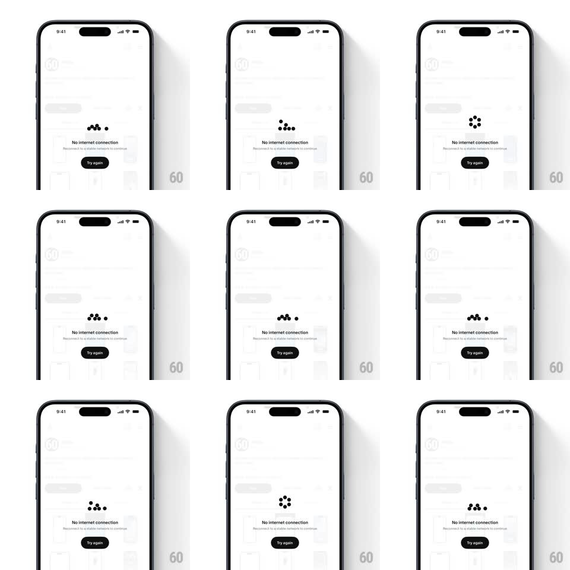

Media
Frame-by-frame

Rebuild this animation 1:1: Cosmos' offline state - a small cluster of dots orbits and rearranges itself above "No Internet connection", the only motion on a grayed-out screen.

Rebuild this animation 1:1: Cosmos' offline state - a small cluster of dots orbits and rearranges itself above "No Internet connection", the only motion on a grayed-out screen. ## Integration Integration: stack-agnostic spec - springs given as stiffness/damping, timed motions as duration + curve; map every value to your framework and animation library of choice. ## Scene A light app screen frozen behind the state: dimmed content visible underneath. Centered: a tiny constellation of dark dots (4 to 7), the headline "No Internet connection", the sub-line "Reconnect to a stable network to continue", and a dark "Try again" pill button. ## Motion spec Pattern: orbiting dot-cluster spot illustration - minimalist offline indicator. - The dots cycle through arrangements: a loose horizontal line, a compact ring, a scattered cluster - morphing between formations every ~1.2s (each dot easing to its next position, 700ms, ease-in-out, all dots moving at once). - One or two dots continuously orbit the cluster's center (2s loop) even mid-morph - the group never sits still. - Dots are small (6-10px) and near-black - a spot illustration, not a spinner. - Everything else is frozen: the dimmed background content, headline, and button hold perfectly still - the dots are the only signal of life. - The loop is seamless and indefinite - it runs until connectivity returns. ## Calibration - The cluster stays small and centered - it should feel like a thought bubble, not a loader. - Motion is smooth and unhurried - no bounce, no spring; offline is a waiting room. ## Reduced motion Dots hold a static ring formation. ## Don't miss - "Try again" is the only action - no settings link or diagnostics clutter. - The background content stays visible but clearly disabled - the state overlays the app, not replaces it.